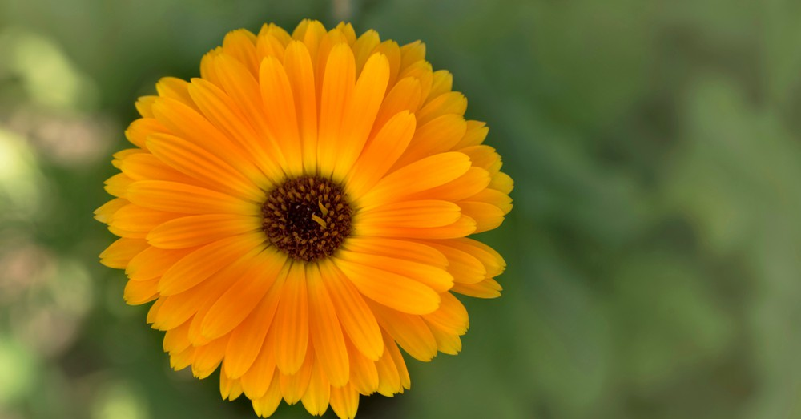
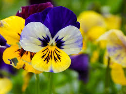
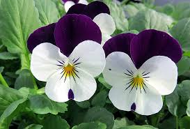
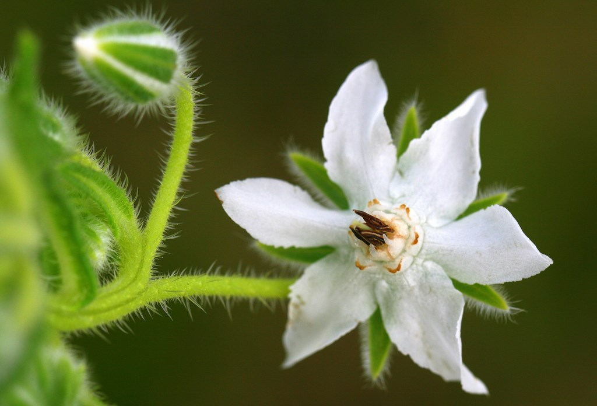

Flores Comestibles

Caléndula
La caléndula es conocida por sus pétalos vibrantes y ligeramente picantes que pueden usarse en ensaladas, sopas y guisos.

Pensamiento
Los pensamientos tienen un sabor suave y se utilizan comúnmente como decoración en postres y ensaladas.

Viola
Las flores de viola son pequeñas y coloridas, perfectas para adornar pasteles y otros postres.

Borraja
La borraja tiene un sabor similar al pepino y sus flores se utilizan en bebidas y ensaladas.